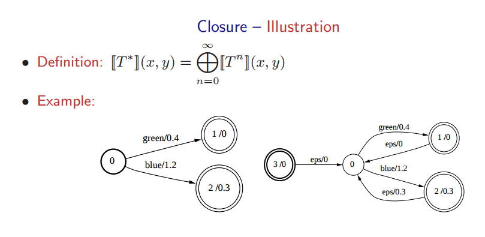
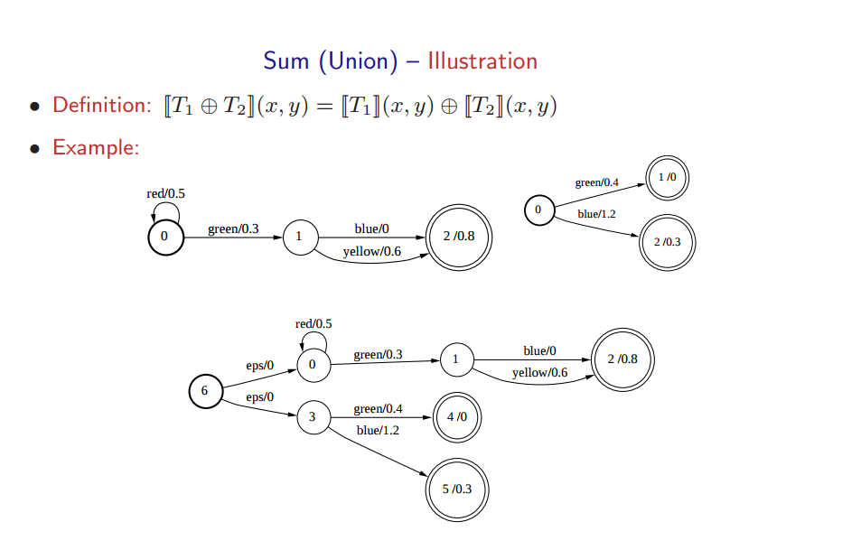
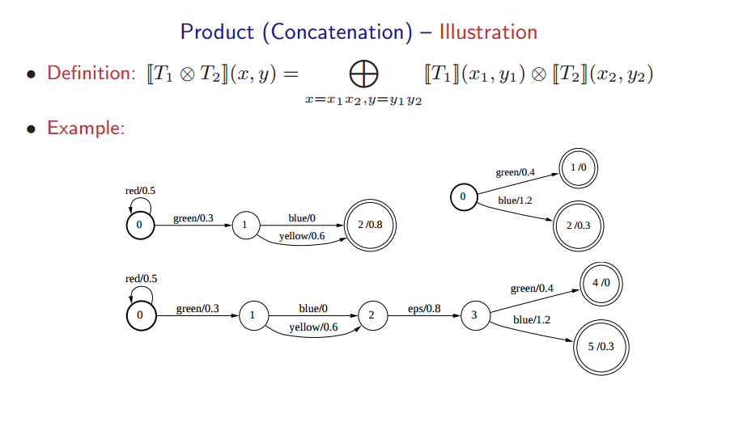
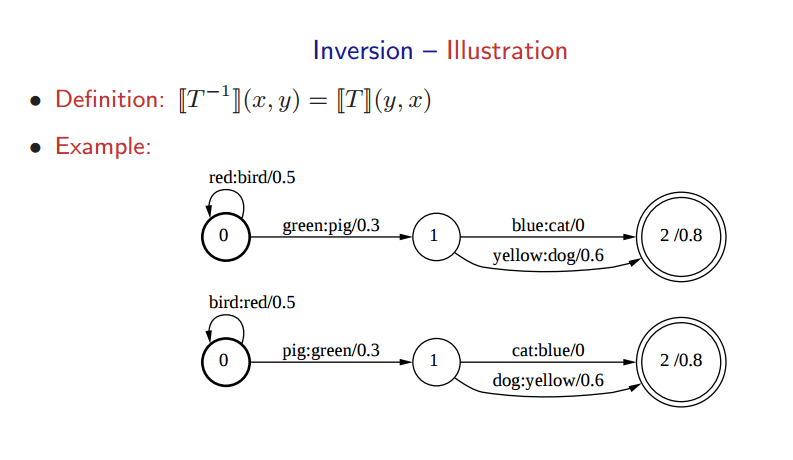
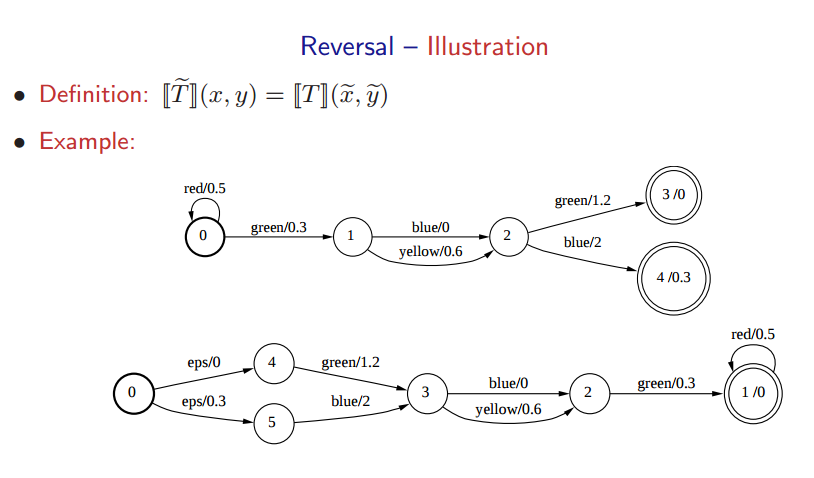
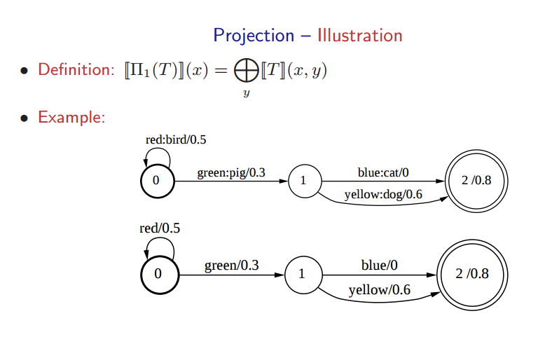

WFST详解#2
本文是WFST系列文章的其中一篇，想要了解更多可以点击这个系列的目录，欢迎您的到来～
本篇文章主要讲解WFST的基本操作。这些操作比较简单，因此放在一起讲解。
1 基本操作
下面的基本操作是需要熟悉的，难度不大，但在很多地方都需要用到。在网上有一个很好的slides可以作为学习的参考。它有很多例子，可以直观地了解每一个算法运行的结果怎么样。这里的算法比较简单，看一下公式和图例基本就能了解清楚。在这篇短文中，我会直接配合slides的截图介绍每一个算法。
slides的地址在这里：http://openfst.cs.nyu.edu/twiki/pub/FST/FstHltTutorial/tutorial_part1.pdf
1.1 Kleene closure
这个算法的作用是将WFST变成一个闭环。具体做法是新建一个起点的状态，指向原本的起点状态。这里我们就新建了一个转移。这里之后，我们再新建一个转移，从终止状态指向原本的起始状态。我们还要进行一下权重的调整：新的初始状态不再带权重，而将权重放到新的转移（指向原本的起点状态）上；从终止状态指向原本起点的转移上，我们将权重设置为终止状态的权重。

1.2 Union
这一个算法将两个WFST联合起来。联合的方式如下：创建一个新的节点作为起点，然后从这个起点出发，创建两个转移，指向原本的两个WFST的起点。

1.3 Concatentation
Concatentation算法的作用是将一个WFST接在另一个WFST的末尾。第一个WFST的终止权重自然而然转换成了新转移的权重。

1.4 Inversion
翻转操作非常重要，在语音识别解码器构建以及解码中都会用到。操作很简单，就是把转移上面的输入和输出翻转过来。操作之后，就能通过原本的输出输入，通过原本的输入输出。一个大写字母变成小写字母的WFST就会被转换成小写到大写的WFST。

1.5 Reversal
这个算法将整一个WFST逆转过来。我们新建一个新的起点，指向终止状态。整一个WFST的转移方向都要反过来。

1.6 Projection
这一个步骤，我们将WFST的输出都抛弃掉。我们的WFST这里就变成了WFA。

2 其他重要算法
有关WFST还有一些非常重要的算法，这些算法可以大致分为两类：合成(Composition)和优化(Optimization)。优化算法又包括：Determinization，Epsilon-Removal，Weight-pushing， Minimization。这些算法相对复杂，针对每一个算法我会写一篇简单的文章。可以参考。